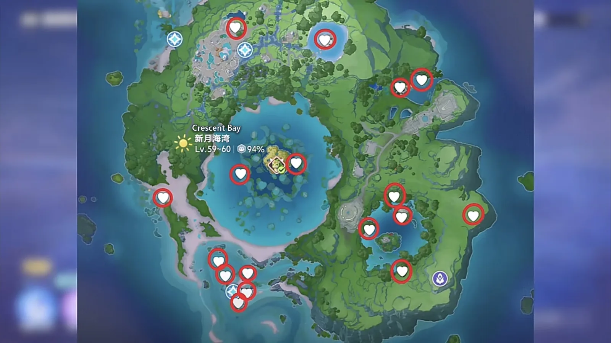
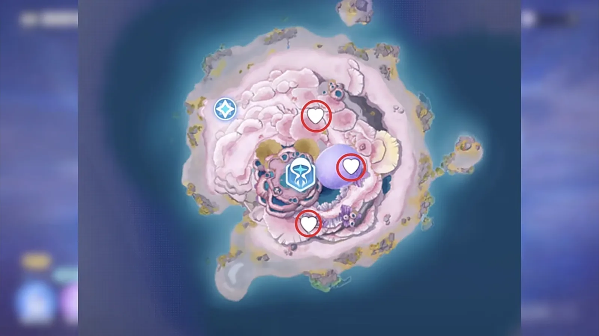
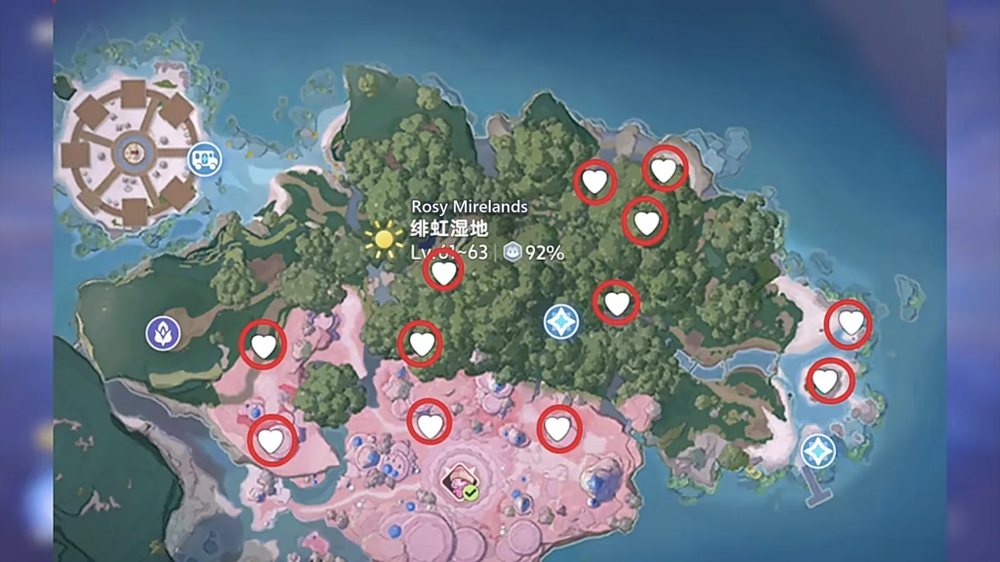
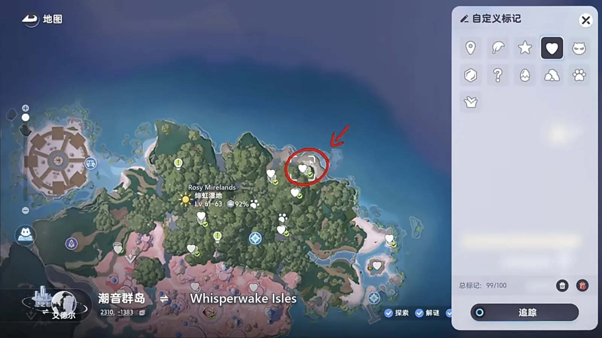
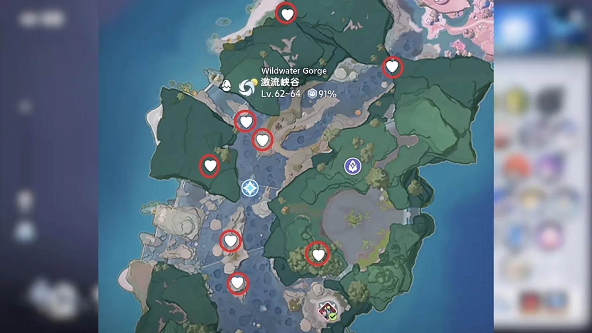
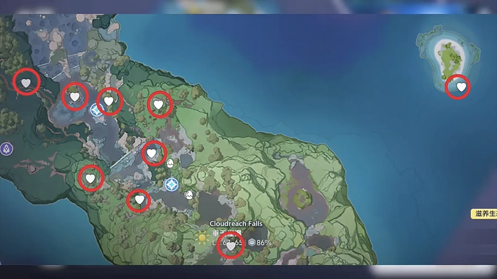

Home首页 / Guides攻略 / All 54 Lumin Amber in the Whisperwake Isles《伊莫》潮音群岛的 54 个辉耀琥珀全收集
Checked核对于 November 2, 20262026 年 11 月 2 日
All 54 Lumin Amber in the Whisperwake Isles《伊莫》潮音群岛的 54 个辉耀琥珀全收集
Where all 54 Lumin Amber in the Whisperwake Isles are, which one is night-only, which one needs a clear morning, and the order that saves a second lap.潮音群岛 54 个辉耀琥珀都在哪：哪一个只在夜里出、哪一个要等晴天清晨，以及少跑一趟的顺序。
The Whisperwake Isles hold 54 Lumin Amber. The four regions account for 49 of them — 20 in Crescent Bay, 12 in the Rosy Mirelands, 8 in the Wildwater Gorge and 9 at Cloudreach Falls — and the last 5 come off bosses. All but three sit in the open: walk to the pin on the map and pick it up.潮音群岛一共 54 个辉耀琥珀。四张图分下来是这样：新月海湾 20 个，绯虹湿地 12 个，激流峡谷 8 个，垂天崖瀑 9 个，一共 49 个；另外 5 个是打 BOSS 给的。除了三处有条件的，其余全摆在明面上，对着地图上的标点走过去就能拿。
Three of the 54 are gated. One in the Rosy Mirelands wants early morning and clear weather in that region at the same time; rain and storms both keep it hidden. One at Cloudreach Falls only appears at night — go in daylight and the spot is empty. One in the Wildwater Gorge hangs over a boss's head and cannot be taken from the ground. Everything else on this page is a matter of getting there.54 个里有三处要满足条件。绯虹湿地那一个要清晨，而且得是这一带的晴天 —— 下雨和风暴都不行。垂天崖瀑那一个只在晚上出现，白天过去是空的。激流峡谷那一个在 BOSS 头顶，站在地上够不着。其余的都只是走没走到的问题。
Crescent Bay: 17 of the 20 are on the map新月海湾：20 个里 17 个标在图上
Crescent Bay is 20, and the map marks 17 of them. None needs a condition, so each one is a walk to a pin and a pickup. The other 3 are out at the Branch — the tree landmark in the middle of the bay — and they are in the open too: one lap around it and the three are in hand.新月海湾一共 20 个，地图上标出来的是 17 个，没有需要等条件的，走到跟前就能收。剩下 3 个在地脉树那边 —— 就是海湾中间那棵地标树 —— 同样都在明面上，绕着树走一圈就能收齐。
This is the easiest of the four and the right place to start. Clear it and the counter is already at 20, which makes the other three regions feel a great deal less like a chore.四张图里这一段最省事，也从这里开始。扫完手上的数字直接上到 20，后面三张图才有底气慢慢抠。


Walk the ring once and the region is done.绕着树走一圈，这一段就齐了。
Rosy Mirelands: 12, and the pair by the river is what holds people up绯虹湿地：12 个，卡人的是河边那两个火药壶
Rosy Mirelands is 12, and most of them are ordinary. One is not: if someone is still short of 54, this is usually the amber they are missing.绯虹湿地一共 12 个，数量不算多，但有一处得单独拎出来说。到现在还没凑够 54 个的人，绝大多数就卡在这一个上。
It is on the riverbank. Take the waypoint in the middle of the region, land facing the water, walk straight ahead until the river is in front of you, then edge a little to the right. Set the clock to morning before you go: at night there is nothing at that spot, because the amber sits between two powder kegs and the kegs themselves only come up in the morning light.位置在河边。传送到绯虹湿地中间那个点，落地往正前方一直走到河边，再往右挪一点点。时间必须调在清晨 —— 晚上站在这个位置什么都没有，它就夹在两个火药壶中间，切到清晨，火药壶才会显出来。
The weather has to be clear as well, and clear in the Rosy Mirelands — a clear sky somewhere else, or rain in the neighbouring region, does not count. Both conditions have to be true at once, which is the reason this one should not be your first stop of the run.天气也有讲究，得是晴天，下雨和风暴都不行，而且必须是绯虹湿地这一带的晴天。这两条同时对上，它才肯露脸，所以别把这一处安排在跑图的第一站。


Wildwater Gorge: 8, and the one over Jabster is the easy miss激流峡谷：8 个，最容易漏的是 G6 下口
Wildwater Gorge is 8, and the one that goes missing is the G6 lower entrance — it sits directly over Jabster (dark · ice · break).激流峡谷一共 8 个，最容易漏的是 G6 下口那一个，就在拳簧虾（Jabster，暗 · 冰 · 击破）的头顶上。
Take the Bloom waypoint, walk straight back from it to the middle of the three trees, and fly up from there. It is pinned to the boss's position, so it cannot be taken from the ground: walk past underneath and you will never see it.传送到地脉花那个点，传过去往后走，走到三棵树的中间，从那边飞上去，这一个就出来了。它贴在 BOSS 的位置上，不升上去收不到，从下面路过很容易就漏掉。

Cloudreach Falls: 9, one at night and one offshore垂天崖瀑：9 个，一个在夜里，一个在岛上
Cloudreach Falls is 9. The one up by the forest hive in the top-left is not there in daylight — set the clock to night before you travel, or you arrive at an empty ledge.垂天崖瀑一共 9 个。左上角靠森林蜂巢那边有一个，白天过去是空的，得把时间调到晚上才会出现。
The other one that gets skipped is offshore: there is a small island in the top-right with a single amber on it. The flight over the water is long enough that it is easy to spend the whole crossing watching the coastline and miss the island entirely.另一处容易漏的在海上：右上角还有一座小岛，岛上放着一个。飞过海面那一段够长，容易只顾着看岸线，把岛整个漏掉。

The last five come off bosses剩下 5 个，在 BOSS 身上
The pins across those four maps add up to 49. The other 5 are dropped by bosses, so there is nothing to hunt for on the map — clear the regions and they arrive on their own.四张图上能对着走的标点加起来是 49 个，另外 5 个是打 BOSS 给的。这 5 个不用在图上来回找，一边清图一边顺手打，打完了自然就凑齐。
The order: no-condition first, clock and weather last收的顺序：先扫不用等条件的，再抠时间和天气
Order matters more than the route here.按图走的时候，顺序比路线更要紧。
Clear Crescent Bay first — 20 with nothing to wait for, in one pass. Then the Wildwater Gorge, and do not skip the climb at G6. Then Cloudreach Falls, with the clock set to night before you travel, so the night-only one and the island both go down in the same lap.先把新月海湾扫完，20 个都不用等条件，一趟能拿 20 个。接着走激流峡谷，G6 下口那一个记得飞上去，别省这一步。然后去垂天崖瀑，出发前把时间调到晚上，把那 9 个里夜里才出来的那一个和岛上的一并收了，省得回头再跑一趟。
Leave the Rosy Mirelands for last. It is the only region holding two conditions at once, and a clear morning is the scarce half of that — spend the best morning of the run there. Once the four maps are clear, the boss five finish the count.绯虹湿地放到最后。它同时压着清晨和晴天两个条件，天色和天气凑不齐的时候去了也是白站，把你这一趟里最顺的那个清晨留给它。等四张图的标点全亮，剩下的就是 BOSS 身上那 5 个，回头去打的时候，54 个就齐了。
More guides相关攻略
- Four Alpha Eggs on the New Map, and the Four-Flash Jeburst《伊莫》新地图四颗头目蛋，四闪飞流翼 — One Alpha egg per region on the Whisperwake Isles, and only the Cloudreach Falls one becomes a four-flash Jeburst. Where each egg is, which one to hatch, and the Prismana step that waits for 16 November.潮音群岛每个区域一颗头目蛋，四颗里只有垂天崖瀑那颗能做四闪飞流翼 —— 每颗在哪、孵哪一颗、11 月 16 日那一步怎么接。
- Prismana, Sparkling, Umbral and the Shiny Star: Aniimo's Four Rare Terms, Explained《伊莫》四个词条：虹光、闪耀、幽黯、闪亮之星都是什么意思 — The two appearances and the one rating that decide whether an Aniimo counts as finished: which of them is limited, which is luck, which is nearly free, and the threshold that actually stops people.想让一只伊莫算得上毕业，标准是「双外观加一个闪亮之星」。这四个词条各管一段：哪个限量、哪个靠运气、哪个几乎白送，以及真正卡住大多数人的那道门槛。